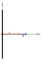
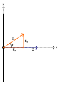

Section 6.1 Electric Flux
We previously learn how to calculate the electric field due to an extended body of charge. In this chapter and the next we will examine Gauss’s Law which provides a much easier way to find the electric field if the problem your dealing with has the right kind of symmetries. Gauss’s Law is closely related to the concept of eletcric flux. Therefore, we’ll need to define and understand how to compute electric flux before we try to use it in Gauss’ Law.
Flux describes how much of something flows through a surface. As a prototypical example, imagine a planar hoop being submerged in a river with a uniform velocity throughout. The volumetric flux of water through the hoop is the volume of water passing through the hoop per unit time.

In Figure 6.1.1 what is the volumetric flux of water through the hoop? Now only the water passing through the hoop’s area counts toward the flux, so the total volume passing through the hoop in an interval of time \(\Delta t\) is \(\left( \left| \vec{v} \right| \Delta t \right) \Delta A\text{.}\) The volumetric flux is then
\begin{equation*}
\Phi = \left| \vec{v} \right| A.
\end{equation*}
Not that \(\Phi\) is the symbol commonly used to denote flux.
You may have noticed the vector labeled \(\vec{A}\) in the diagram. This is the area vector of the hoop. An area vector of a flat surface is a vector that is perpendecular to the surface with a magnitude that’s equal to the area of the surface. In Figure 6.1.1 the area vector and the velocity of the water are parrallel.

What’s the volumetric flux of water through the hoop in Figure 6.1.2? In this diagram no water actually pierces or flows through the area of the hoop. Then the volumetric flux of water through the hoop is
\begin{equation*}
\Phi = 0.
\end{equation*}
Note that the area vector is perpendicular to the water’s velocity in Figure 6.1.2.
What’s the volumetric flux of water through the hoop in Figure 6.1.2? In this diagram, the velocity of the water makes an angle \(\theta\) with the area vector. Taking the direction of the area vector to be the x-axis, we can decompose the velocity vector of the water into x and y components. The y component of the velocity doesn’t cause water to pass through the hoop. Only the x component of the velocity contributes to the flux. The x component of the velocity is \(\left| \vec{v} \right| \cos \theta\text{.}\) Then the total volume passing through the hoop in an interval of time \(\Delta t\) is \(\left( \left| \vec{v} \right| \cos \theta \Delta t \right) \Delta A\text{.}\) Then the volumetric flux of water through the hoop is
\begin{equation*}
\Phi = \left( \left| \vec{v} \right| \cos \theta \right) \Delta A.
\end{equation*}
We can rewrite this expression using the dot product and area vector. Doing so gives
\begin{equation*}
\Phi = \vec{v} \cdot \vec{A}.
\end{equation*}
This expression works for all the cases we’ve cover so far.

Analogous to the volumetric flux examples we considered, we define the electric flux passing through a planar surface in a uniform electric field as
\begin{equation*}
\Phi_{E} = \vec{E} \cdot \vec{A}.
\end{equation*}
If the electric field isn’t uniform or the surface isn’t planar then this expression won’t work. However, if the electric field isn’t uniform or the surface isn’t planar we can still cut the surface up into incredibly tiny chunks. Since they’re so tiny we can approximate each chunk as planar and the electric field as uniform over the area of the chunk. Each chunk contributes a flux
\begin{equation*}
\Delta \Phi_{E} = \vec{E} \cdot \Delta \vec{A}.
\end{equation*}
To get the total flux through the surface we sum up the fluxes through all the chunks, which gives
\begin{equation*}
\Phi_{E} = \sum \vec{E} \cdot \Delta \vec{A}.
\end{equation*}
Taking the limit as the size of the chunks goes to zero transforms the sum into an integral. Then we get
\begin{equation*}
\Phi_{E} = \int \vec{E} \cdot d\vec{A}.
\end{equation*}